XLETIX veranstaltet Hindernisläufe in Deutschland, Österreich und der Schweiz: unter drei Serien mit ganz unterschiedlichen Zielgruppen, von Familien über Frauen bis hin zu sportbegeisterten Teams. Ich habe mich bewusst für ein Praktikum im Organic Marketing entschieden, weil hier Sport, Content und echte Live Events aufeinandertreffen: genau die Mischung, die mich seit meiner Kindheit begleitet.
Im Bewerbungsprozess habe ich neben einem Motivationsgespräch auch eine gestalterische Aufgabe eingereicht: einen Instagram Post Entwurf für XLETIX Kids und einen Facebook Post für den Partner MaxiNutrition. Das Motto des Unternehmens, „Ein Team, Ein Ziel", hat sich durch die ganzen 5 Monate gezogen: von den ersten Einarbeitungstagen bis zum letzten Bannerabbau am Eventwochenende.
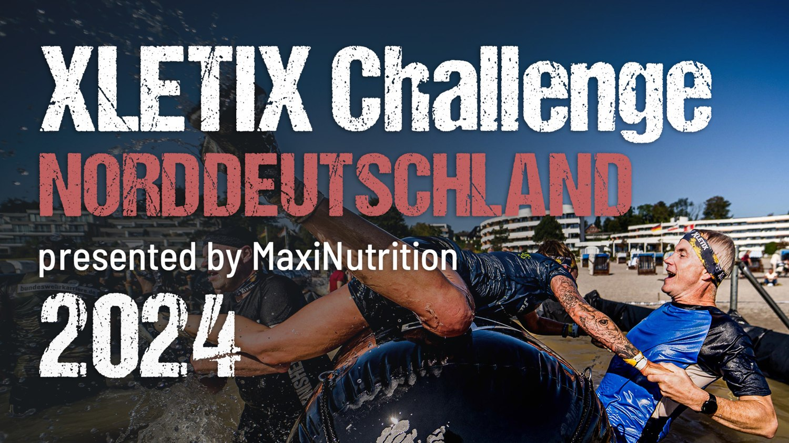
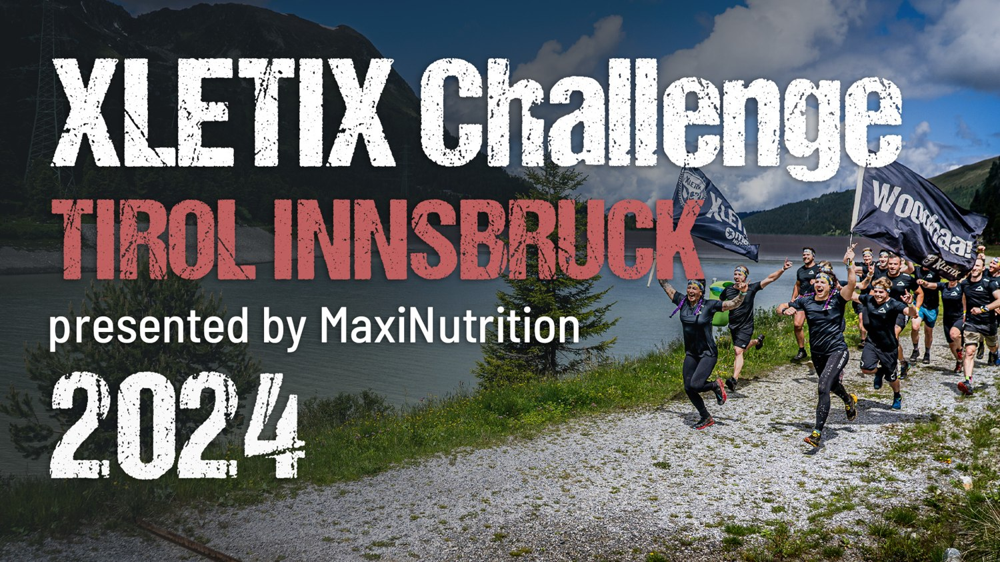
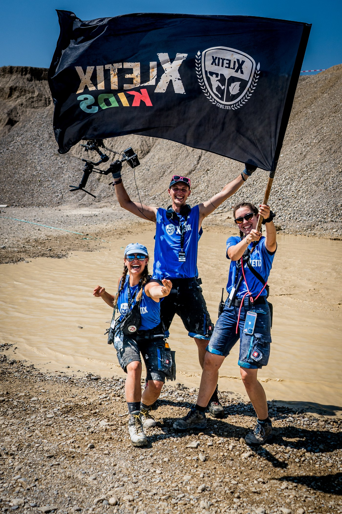
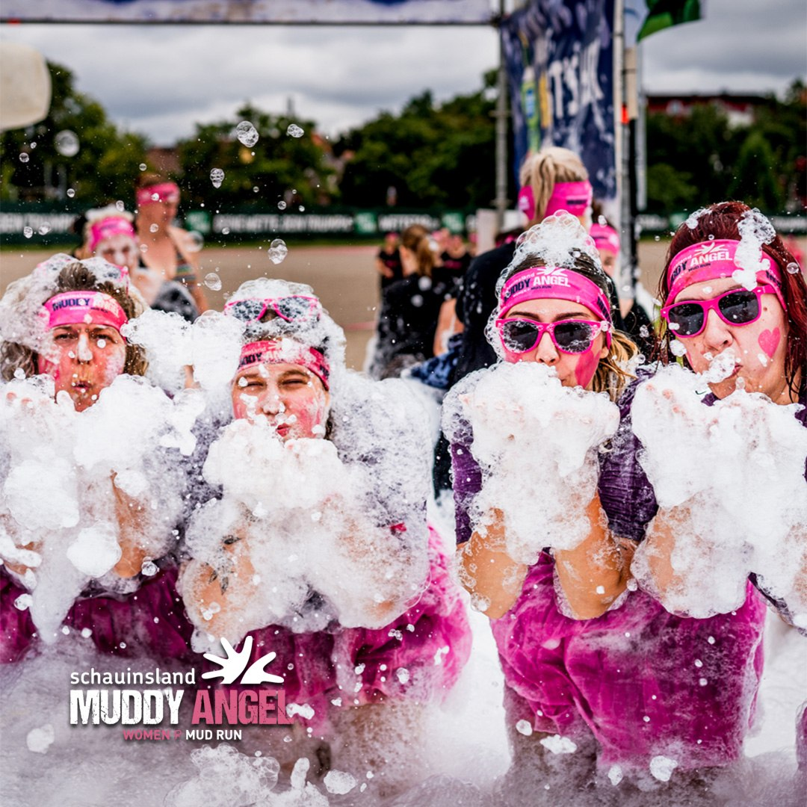
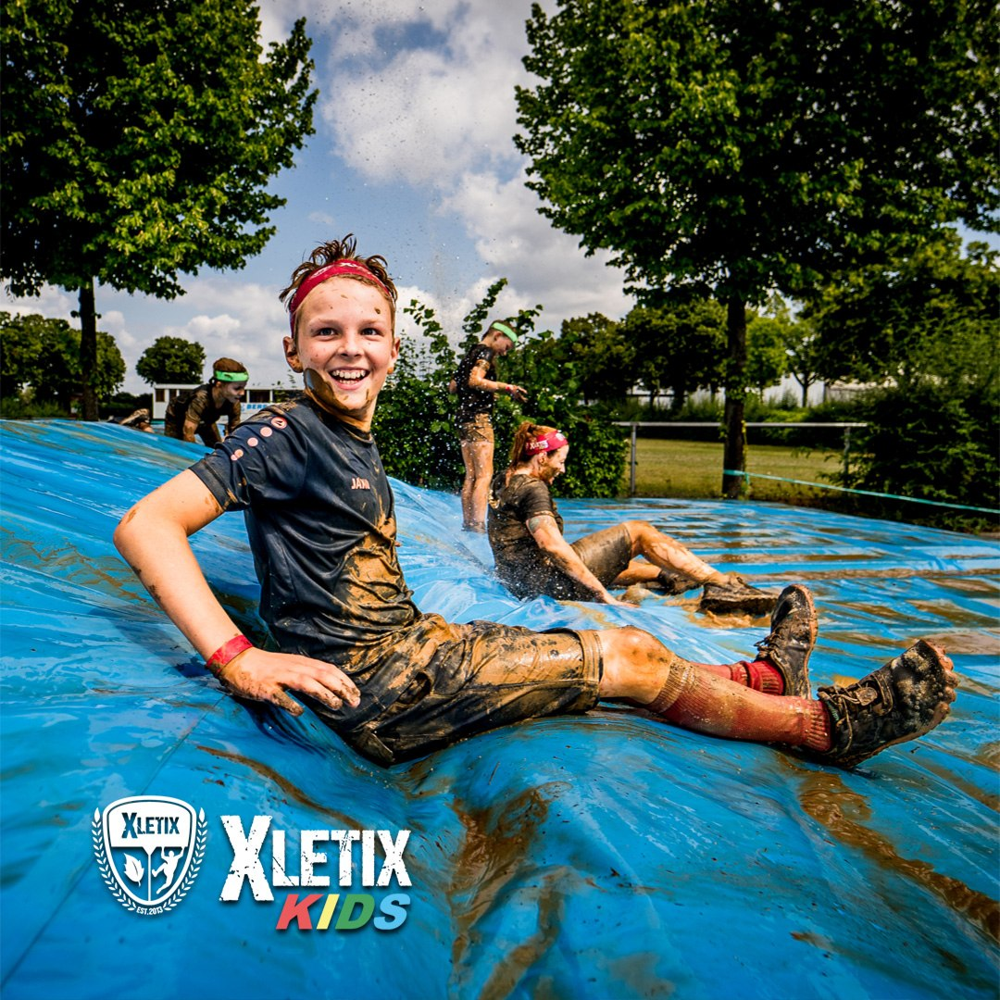
Organic Marketing war bei XLETIX verantwortlich für E-Mail-Marketing, Presse, Community Management und Content für Instagram, TikTok, Facebook, LinkedIn, Pinterest, Google My Business und YouTube: für die drei Serien XLETIX Challenge, XLETIX Kids und den Schauinsland Muddy Angel Run.
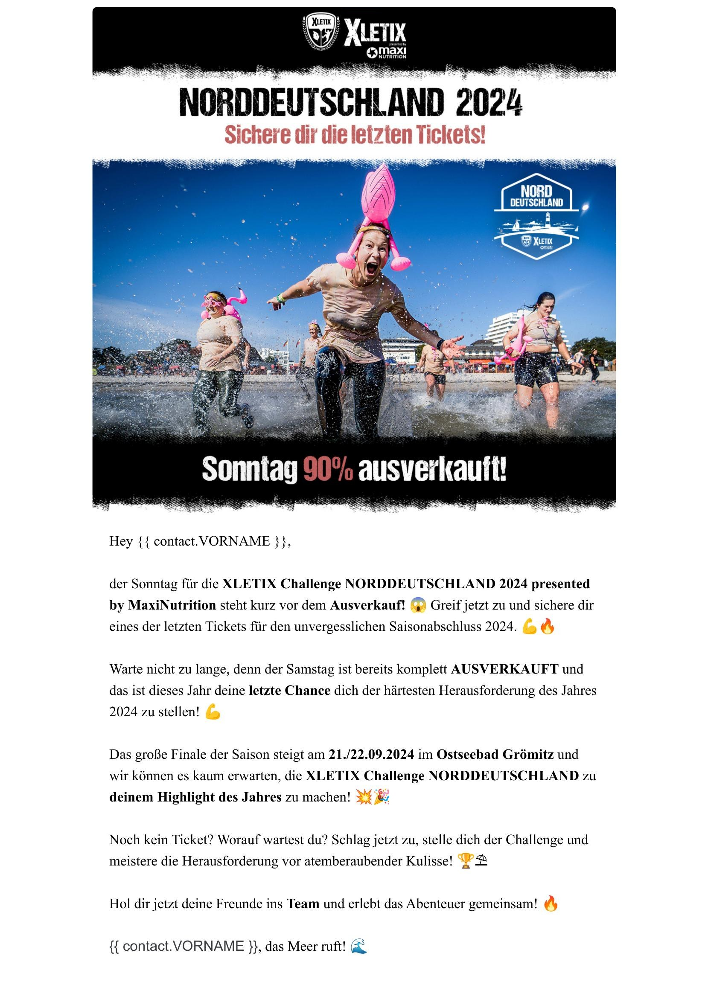
Brevo funktioniert wie ein Baukastensystem: dynamische Empfängerlisten aktualisieren sich automatisch nach Aktivität, sodass gezielte Nachrichten zu Preissteigerungen oder Veranstaltungsorten an genau die richtige Zielgruppe gehen.
Die Kampagne oben zeigt das Prinzip: klarer visueller Aufhänger, ein konkreter Anlass („90 % ausverkauft"), ein einzelner Call-to-Action. So bleiben Teilnehmende informiert und an die Marke gebunden, statt in der Inbox unterzugehen.
Für alle drei Serien habe ich die YouTube-Kanäle aufbereitet: mit durchdachten Tags, verknüpften Playlists und Endcards, damit Eventrückblicke auch Monate später noch gefunden werden und neue Zuschauende zu den nächsten Terminen führen.
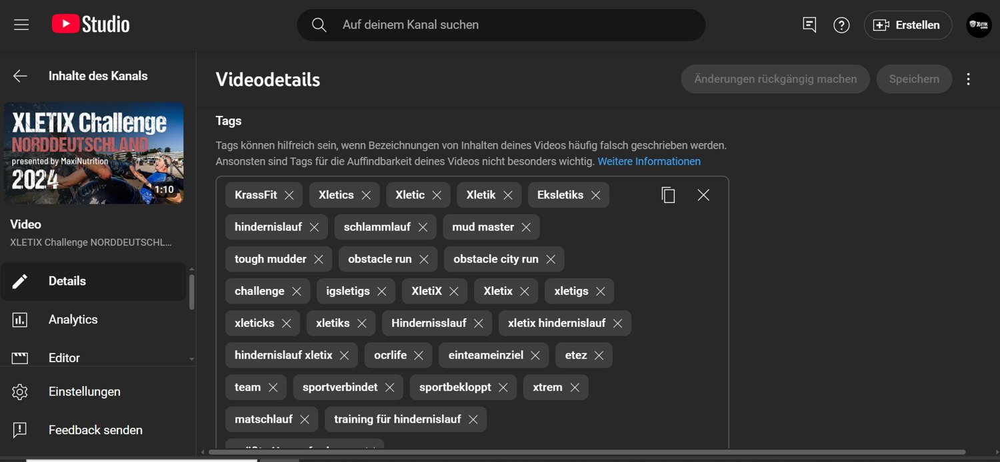
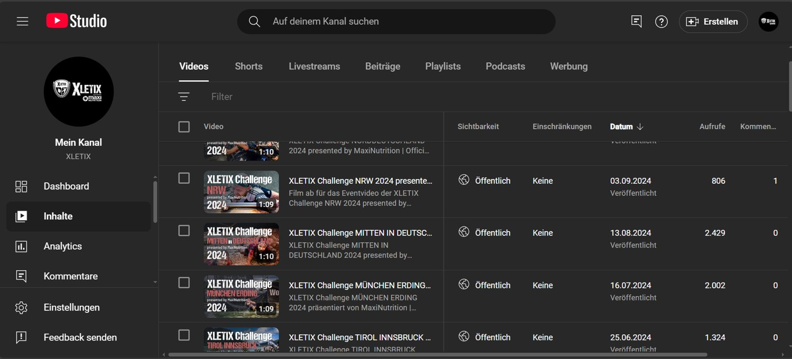
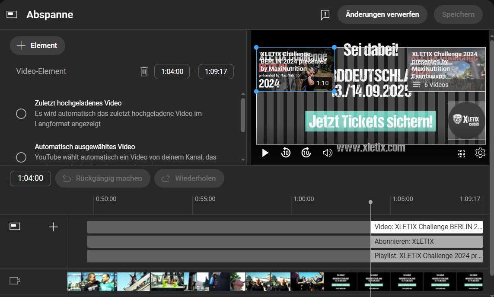
In Photoshop habe ich Storys, Umfragen und Kampagnenbilder gestaltet und eigene Konzepte entwickelt: darunter ein Adventskalender-Konzept für die Serie XLETIX Challenge. Das Maskieren von Objekten und das kreative Verstecken von Textelementen habe ich mir größtenteils direkt im Praktikum angeeignet.
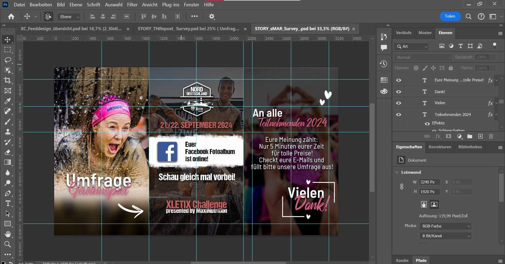
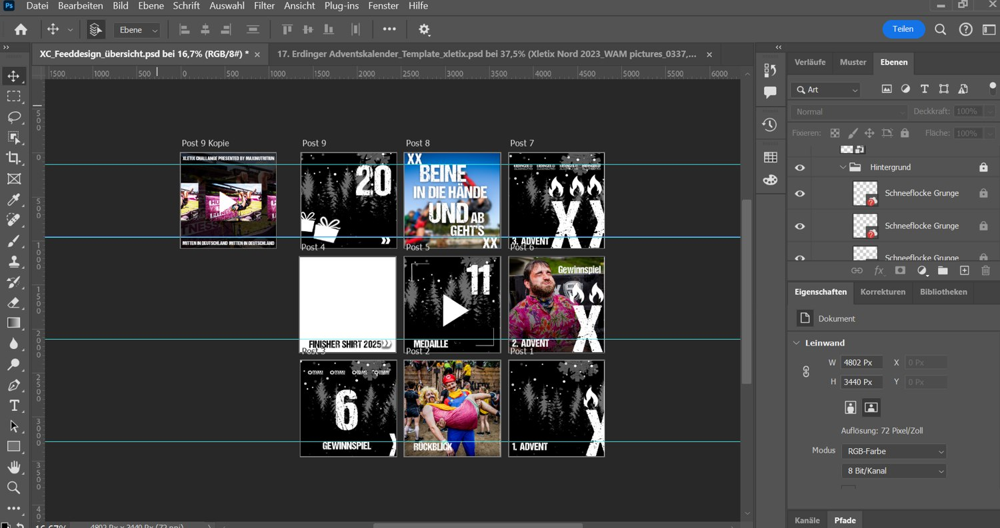
Schon meine Bewerbungsaufgabe war ein zweiteiliger Instagram-Post-Entwurf für XLETIX Kids: mit klarer Botschaft, kräftigem Grün als Wiedererkennung und einem Call-to-Action am Ende der Slide-Reihe. Genau dieses Prinzip habe ich im Praktikum für echte Kampagnen weitergeführt, etwa für FOMO-Teaser und Launch-Ankündigungen für neue Eventtermine.
Neben Instagram und Facebook habe ich außerdem die YouTube Kanäle aller drei Serien SEO optimiert: mit passenden Tags, Videotiteln und verknüpften Playlists, damit Eventrückblicke auch nach dem Event weiter Reichweite bringen.
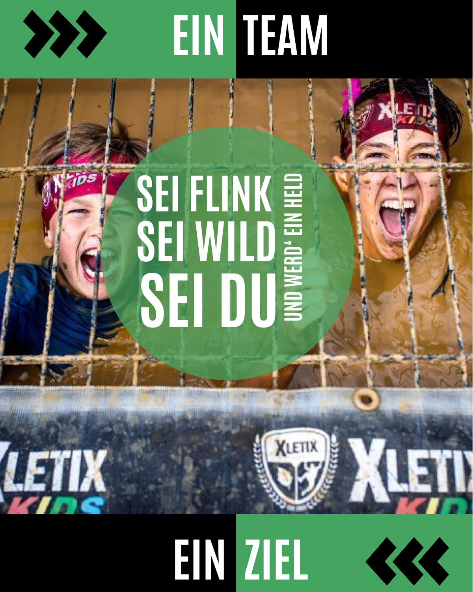
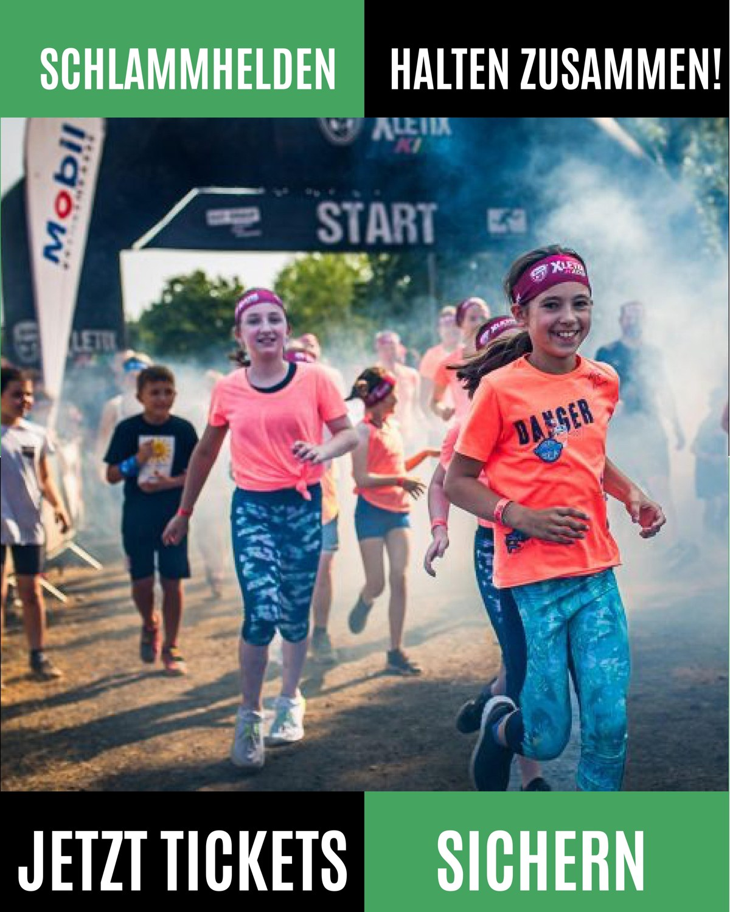
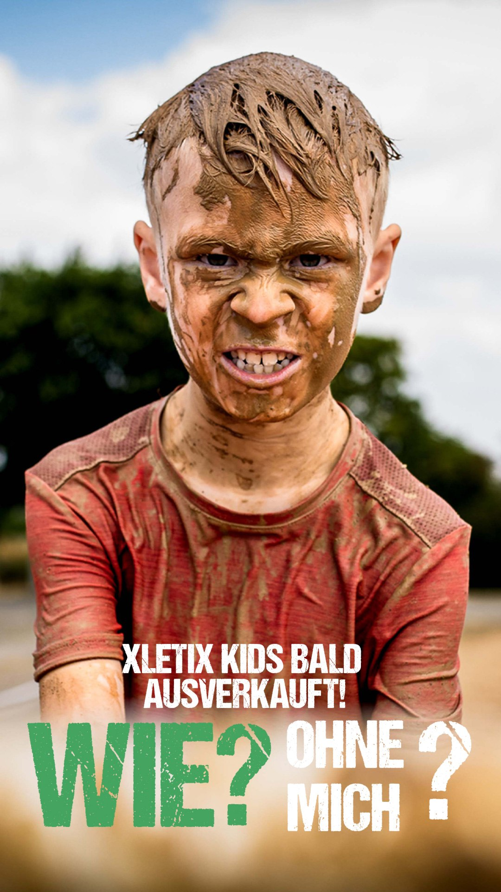
An den Eventwochenenden ging es raus aus dem Büro: Banner sortieren, Hindernisse bebannern, das Foto Video Team mit Interviews und Motivation der Teilnehmenden unterstützen und zwischendurch Content für TikTok, Instagram und Facebook drehen und in CapCut schneiden. Samstag und Sonntag waren die intensivsten Tage: aber auch die, an denen das Motto „Ein Team, Ein Ziel" am spürbarsten war.
Nach jedem Event folgte die Nachbereitung: Fotoalben mit den besten Bildern, Eventvideos in zwei Formaten für Facebook und Instagram sowie eine gemeinsame Manöverkritik im Team, was gut lief und was beim nächsten Mal besser werden kann.
Die enge Zusammenarbeit mit einem erfahrenen Marketingteam hat mir gezeigt, wie viel Planung, Timing und Teamarbeit hinter jedem einzelnen Post stecken. Besonders gefreut hat mich, dass Teile meines Weihnachtskonzepts später tatsächlich umgesetzt wurden. Sicherheit im Umgang mit CapCut, Photoshop, Brevo und Agora Pulse nehme ich seitdem in jedes neue Projekt mit.